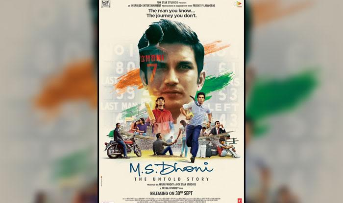
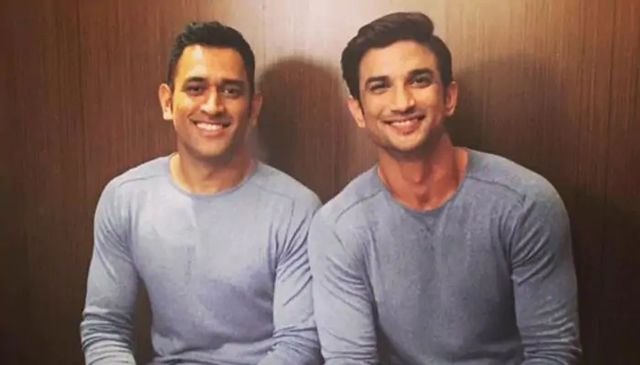

M.S. Dhoni: The Untold Story is a 2016 Indian Hindi-language biographical sports drama film written and directed by Neeraj Pandey. It is based on the life of former Test, ODI and T20I captain of the Indian national cricket team, Mahendra Singh Dhoni. The film stars Sushant Singh Rajput as Dhoni, along with Disha Patani, Kiara Advani, and Anupam Kher. The film chronicles the life of Dhoni from a young age through a series of life events.
 The more things seem clear about Dhoni, the more enigmatic (even Bharat Sundaresan couldn’t unravel much in his book, as he himself accepted in the closing chapters) he remains.